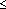

Mathematical Morphological Filter VI
Owning Palette: Filters VIs
Requires: Full Development System
Filters the input data sequence X with Structure Element using a mathematical morphological filter.
 Add to the block diagram Add to the block diagram |
 Find on the palette Find on the palette |
Owning Palette: Filters VIs
Requires: Full Development System
Filters the input data sequence X with Structure Element using a mathematical morphological filter.
| Add to the block diagram |
Find on the palette |
 |
X extension type specifies the method by which to extend the input X at both ends of the sequence.
|
||||||
 |
X is the input signal to filter. | ||||||
 |
Structure Element specifies the structure element to use in the filtering process. | ||||||
|
operation type specifies the fundamental operation of the morphological filter.
|
||||||
 |
zero phase? specifies whether to perform zero-phase filtering of the signal. The default is TRUE. | ||||||
 |
Filtered X returns the filtered signal. | ||||||
 |
error returns any error or warning from the VI. You can wire error to the Error Cluster From Error Code VI to convert the error code or warning into an error cluster. |
This VI concatenates the input signal X with a sequence of length k at both ends before filtering according to X extension type, where k is the length of Structure Element.
The following illustration represents the new sequence when X extension type is Zero padding.
The following illustration represents the new sequence when X extension type is Symmetric.
If k > n, this VI pads X with k – n zeros at both ends of the new sequence, where n is the length of X.
The following illustration represents the new sequence when X extension type is Periodic.
If k > n, this VI periodically repeats X more than once at both ends of the sequence.
The Mathematical Morphological Filter VI can perform two basic operations, dilation and erosion.
The dilation of a 1D signal f is defined as follows:
D(i) = max{x(i – j) + s(j)}, 0  i n – 1, 0 j k – 1
where x(i) is the i-th element in X and s(j) is the j-th element in Structure Element.
The following front panel shows an example of the dilation effect. The original signal consists of two pulses with widths of 20 and the Structure Element is an array of ten zeros. The filtered signal expands the pulses in the original signal.
The erosion of a 1D signal f is defined as follows:
E(i) = min{x(i + j) – s(j)}, 0 i n – 1, 0 j k – 1
where x(i) is the i-th element in X and s(j) is the j-th element in Structure Element.
The following front panel shows an example of the erosion effect. The original signal consists of two pulses with widths of 20 and the Structure Element is an array of ten zeros. The filtered signal shrinks the pulses in the original signal.

You can use mathematical morphological filters to reduce various types of noise in an input signal while preserving the compatibility of those shapes with the size of the structure element. The following front panel shows the result of using a mathematical morphological filter to remove the baseline and suppress the noise in an ECG signal.
Refer to the Mathematical Morphological Filters document on the NI Community Web site for more information about using mathematical morphological filters in LabVIEW.